Objectives
At the end of this section you will be able to:
-
Test for an association between two categorical variables using the chi square test.
-
Test for the homogeneity of multiple proportions using the chi square test.
| Fertilizer Type | Low Growth | Medium Growth | High Growth |
| A | 14 | 10 | 6 |
| B | 9 | 12 | 9 |
| C | 7 | 11 | 12 |
| Fertilizer Type | Low | Medium | High | Row Total |
| A | 14 | 10 | 6 | 30 |
| B | 9 | 12 | 9 | 30 |
| C | 7 | 11 | 12 | 30 |
| Column Total | 30 | 33 | 27 | 90 |
| Fertilizer Type | Low | Medium | High |
| A | \(10\) | \(11\) | \(9\) |
| B | \(10\) | \(11\) | \(9\) |
| C | \(10\) | \(11\) | \(9\) |
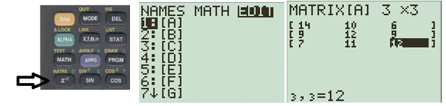
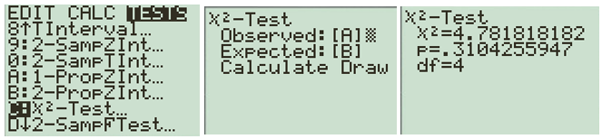
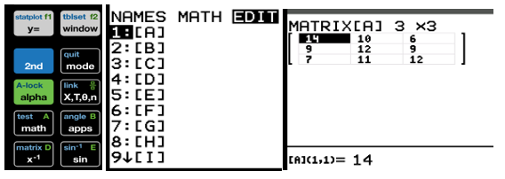
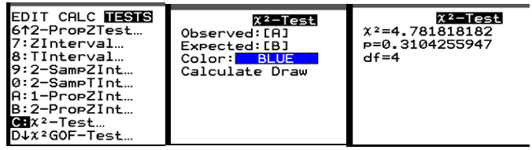
| City | Violent Crime | Property Crime | Drug-Related Crime | Total |
| City A | 48 | 72 | 30 | 150 |
| City B | 36 | 84 | 30 | 150 |
| City C | 60 | 66 | 24 | 150 |
| Total | 144 | 222 | 84 | 450 |
| City | Violent Crime | Property Crime | Drug-Related Crime |
| City A | \(48\) | \(74\) | \(28\) |
| City B | \(48\) | \(74\) | \(28\) |
| City C | \(48\) | \(74\) | \(28\) |
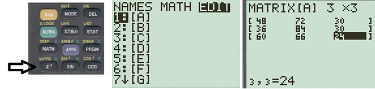
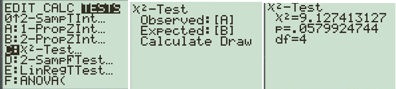
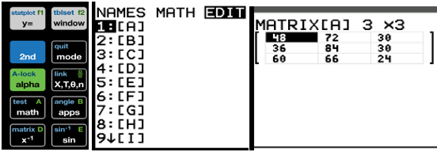
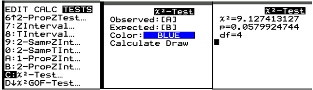
| Country | Gold | Silver | Bronze | Total |
| United States | 40 | 44 | 42 | 126 |
| China | 40 | 27 | 24 | 91 |
| Great Britain | 14 | 22 | 29 | 65 |
| France | 16 | 26 | 22 | 64 |
| Australia | 18 | 19 | 16 | 53 |
| Total | 128 | 138 | 133 | 399 |
| Country | Gold | Silver | Bronze |
| United States | \(40.42\) | \(43.60\) | \(42.01\) |
| China | \(29.19\) | \(31.49\) | \(30.33\) |
| Great Britain | \(20.85\) | \(22.49\) | \(21.67\) |
| France | \(20.53\) | \(22.13\) | \(21.34\) |
| Australia | \(17.01\) | \(18.34\) | \(17.67\) |
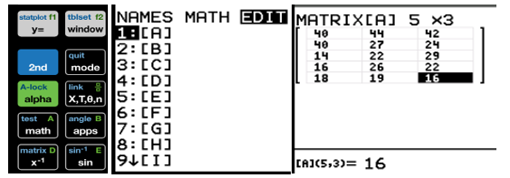
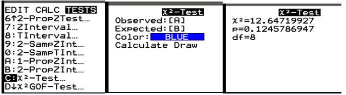
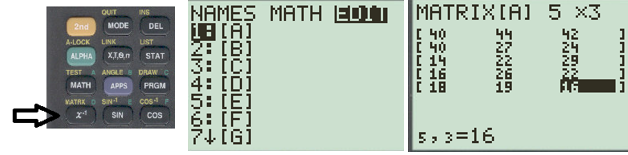
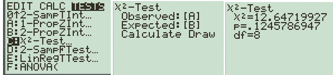
| Age Group | TikTok | YouTube | Total | |||
| Under 30 | 12 | 22 | 18 | 8 | 10 | 70 |
| 30--50 | 20 | 16 | 9 | 15 | 20 | 80 |
| Over 50 | 34 | 8 | 3 | 12 | 23 | 80 |
| Total | 66 | 46 | 30 | 35 | 53 | 230 |
| Region | Type A | Type B | Type AB | Total |
| Region 1 | 42 | 33 | 25 | 100 |
| Region 2 | 35 | 40 | 25 | 100 |
| Region 3 | 48 | 27 | 25 | 100 |
| Total | 125 | 100 | 75 | 300 |
| Region | Type A | Type B | Type AB |
| Region 1 | \(41.67\) | \(33.33\) | \(25\) |
| Region 2 | \(41.67\) | \(33.33\) | \(25\) |
| Region 3 | \(41.67\) | \(33.33\) | \(25\) |
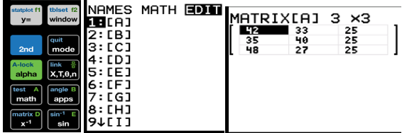
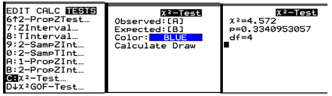
| Airline | Lost | Not Lost | Total |
| Airline A | 18 | 482 | 500 |
| Airline B | 25 | 475 | 500 |
| Airline C | 12 | 488 | 500 |
| Airline D | 30 | 470 | 500 |
| Total | 85 | 1915 | 2000 |
| Airline | Lost | Not Lost |
| Airline A | \(21.25\) | \(478.75\) |
| Airline B | \(21.25\) | \(478.75\) |
| Airline C | \(21.25\) | \(478.75\) |
| Airline D | \(21.25\) | \(478.75\) |
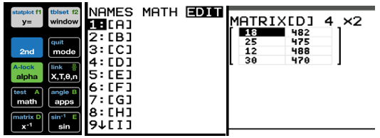
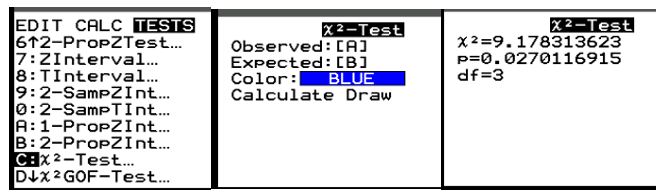